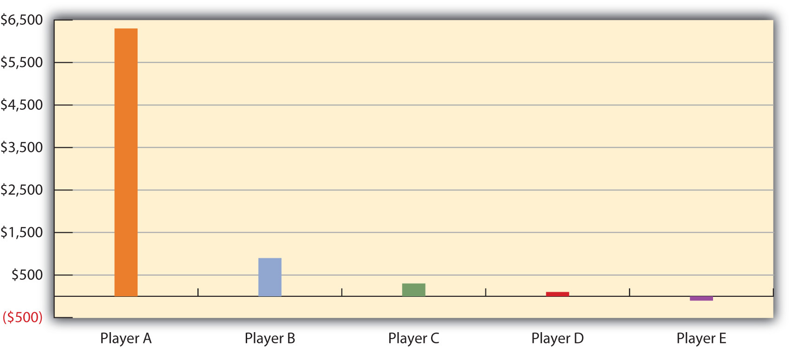

“More Wichita Kids Go Hungry,” the headline said. As the United States was in a deep recession, poverty-stricken parents in Wichita, Kansas, increasingly worried about how they would be able to feed their children. As a state official explained, “We see a lot of children who regularly wonder where their next meal is coming from. Churches that used to do food drives once every two to three months are now doing them once a month.” The number of children eating at one of Wichita’s major food pantries had climbed by one-third from a year earlier, and the number of children classified as homeless had increased by 90% from 1,000 to 1,900. A sixth-grade girl gave life to these numbers when she wrote of her own family’s situation. “My mom works very hard to support our family,” she said, “[but] some days we would eat only once a day. Then Mom got her paycheck and we were really happy but then the bills started coming and we couldn’t buy food because a house was more important. We would rather have a house to live in and we needed a car.” (Wenzl, 2009)Wenzl, R. (2009, July 5). More Wichita kids go hungry. The Wichita Eagle. Retrieved from http://www.kansas.com/news/featured/story/879754.html
This story of hunger in America’s heartland reminds us that poverty is far from unknown in the richest nation in the world, especially since the severe economic recession began in 2008. The United States has long been considered a land of opportunity, but research by sociologists and other social scientists shows again and again that people differ dramatically in their opportunity to realize the American dream.
To illustrate this, imagine that you and four other people are about to begin playing the popular board game Monopoly. Following the rules, each player begins with $1,500. You start the game, go around the board, buy properties or land on someone else’s properties, and sometimes end up in Jail or Free Parking. Like life itself, whether you eventually win or lose the game is a matter of both luck and skill.
But if Monopoly were more like real life, each player would not begin with $1,500. Instead, they would begin with very different amounts, because in real life some people are richer than others, and some are much poorer. In fact, reflecting the unequal distribution of wealth in the United States, one player, the richest, would begin with $6,352 of the $7,500 distributed to the five players combined. The next richest player would have $848. The third player would start with $285, while the next would have $52. The fifth and poorest player would actually begin $38 in debt! Figure 8.1 "Distribution of Starting Cash If Monopoly Were More Like Real Life" depicts this huge disparity in money at the beginning of the game.
Figure 8.1 Distribution of Starting Cash If Monopoly Were More Like Real Life
Source: Based on distribution of wealth data from Mishel, L., Bernstein, J., & Shierholz, H. (2009). The state of working America 2008/2009. Ithaca, NY: ILR Press [An imprint of Cornell University Press].
Now suppose you are the player starting $38 in debt. How would you feel? You can hardly afford to buy Park Place or Boardwalk. Even landing on a couple of “pay” spaces like a utility the first time you go around the board would virtually force you out of the game. If you landed in Jail, you could not afford to get out. What are your chances of winning the game? Yes, you have a chance to win, but how likely is this? The second, third, and fourth players have a better chance of winning than you do, but in the long run they certainly will not win nearly as often as the richest player, who, after all, starts out with about 85% of all the money distributed at the beginning.
Unlike most games, real life is filled with differences in wealth and other resources a society values. Sociologists refer to rankings based on these differences as social stratificationRankings of people based on wealth and other resources a society values.. Except for the simplest preindustrial societies, every society is stratified to some extent, and some societies are more stratified than others. Another way of saying this is that some societies have more economic inequality, or a greater difference between the best-off and the worst-off, than others. In modern society, stratification is usually determined by income and other forms of wealth, such as stocks and bonds, but resources such as power and prestige matter, too. No matter what determines it, a society’s stratification has significant consequences for its members’ attitudes, behavior, and, perhaps most important of all, life chancesThe degree to which people succeed in life in such areas as education, income, and health.—how well people do in such areas as education, income, and health. We will see examples of these consequences in the pages ahead and end with a discussion of some promising policies and programs for reducing inequality and poverty.